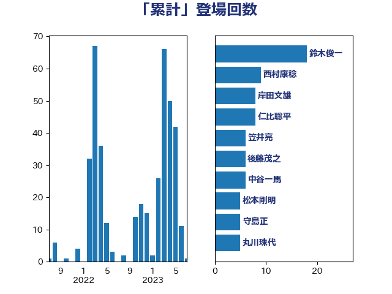

単語「累計」

| 鈴木俊一 | 自由民主党 | 18 回 |
| 西村康稔 | 自由民主党 | 9 回 |
| 岸田文雄 | 自由民主党 | 8 回 |
| 仁比聡平 | 日本共産党 | 8 回 |
| 笠井亮 | 日本共産党 | 6 回 |
| 後藤茂之 | 自由民主党 | 6 回 |
| 中谷一馬 | 立憲民主党 | 6 回 |
| 松本剛明 | 自由民主党 | 5 回 |
| 守島正 | 日本維新の会 | 5 回 |
| 丸川珠代 | 自由民主党 | 5 回 |
| 高市早苗 | 自由民主党 | 3 回 |
| 野田聖子 | 自由民主党 | 3 回 |
| 米山隆一 | 立憲民主党 | 3 回 |
| 石垣のりこ | 立憲民主党 | 3 回 |
| 柳ヶ瀬裕文 | 日本維新の会 | 3 回 |
| 林芳正 | 自由民主党 | 3 回 |
| 川田龍平 | 立憲民主党 | 3 回 |
| 岩渕友 | 日本共産党 | 3 回 |
| 堤かなめ | 立憲民主党 | 3 回 |
| 中川貴元 | 自由民主党 | 3 回 |
| 鬼木誠 | 立憲民主党 | 2 回 |
| 高木宏壽 | 自由民主党 | 2 回 |
| 金村龍那 | 日本維新の会 | 2 回 |
| 野村哲郎 | 自由民主党 | 2 回 |
| 西岡秀子 | 国民民主党 | 2 回 |
| 蓮舫 | 立憲民主党 | 2 回 |
| 稲津久 | 公明党 | 2 回 |
| 福重隆浩 | 公明党 | 2 回 |
| 神津たけし | 立憲民主党 | 2 回 |
| 猪瀬直樹 | 日本維新の会 | 2 回 |
| 河野太郎 | 自由民主党 | 2 回 |
| 河西宏一 | 公明党 | 2 回 |
| 池畑浩太朗 | 日本維新の会 | 2 回 |
| 横山信一 | 公明党 | 2 回 |
| 杉尾秀哉 | 立憲民主党 | 2 回 |
| 末松信介 | 自由民主党 | 2 回 |
| 斉藤鉄夫 | 公明党 | 2 回 |
| 平山佐知子 | 無所属 | 2 回 |
| 島村大 | 自由民主党 | 2 回 |
| 岩本剛人 | 自由民主党 | 2 回 |
| 山田勝彦 | 立憲民主党 | 2 回 |
| 山添拓 | 日本共産党 | 2 回 |
| 小池晃 | 日本共産党 | 2 回 |
| 小倉將信 | 自由民主党 | 2 回 |
| 宮本岳志 | 日本共産党 | 2 回 |
| 吉田久美子 | 公明党 | 2 回 |
| 吉田はるみ | 立憲民主党 | 2 回 |
| 住吉寛紀 | 日本維新の会 | 2 回 |
| 伴野豊 | 立憲民主党 | 2 回 |
| 中島克仁 | 立憲民主党 | 2 回 |
| 齊藤健一郎 | 無所属 | 1 回 |
| 高階恵美子 | 自由民主党 | 1 回 |
| 高橋英明 | 日本維新の会 | 1 回 |
| 高橋千鶴子 | 日本共産党 | 1 回 |
| 高木かおり | 日本維新の会 | 1 回 |
| 阿部知子 | 立憲民主党 | 1 回 |
| 阿部司 | 日本維新の会 | 1 回 |
| 鎌田さゆり | 立憲民主党 | 1 回 |
| 鈴木庸介 | 立憲民主党 | 1 回 |
| 野中厚 | 自由民主党 | 1 回 |
| 谷田川元 | 立憲民主党 | 1 回 |
| 谷合正明 | 公明党 | 1 回 |
| 西銘恒三郎 | 自由民主党 | 1 回 |
| 菊田真紀子 | 立憲民主党 | 1 回 |
| 紙智子 | 日本共産党 | 1 回 |
| 簗和生 | 自由民主党 | 1 回 |
| 竹詰仁 | 国民民主党 | 1 回 |
| 竹内真二 | 公明党 | 1 回 |
| 福山哲郎 | 立憲民主党 | 1 回 |
| 石川博崇 | 公明党 | 1 回 |
| 石井章 | 日本維新の会 | 1 回 |
| 石井拓 | 自由民主党 | 1 回 |
| 田畑裕明 | 自由民主党 | 1 回 |
| 牧山ひろえ | 立憲民主党 | 1 回 |
| 片山さつき | 自由民主党 | 1 回 |
| 沢田良 | 日本維新の会 | 1 回 |
| 池下卓 | 日本維新の会 | 1 回 |
| 江藤拓 | 自由民主党 | 1 回 |
| 永岡桂子 | 自由民主党 | 1 回 |
| 櫻井周 | 立憲民主党 | 1 回 |
| 森屋隆 | 立憲民主党 | 1 回 |
| 梅谷守 | 立憲民主党 | 1 回 |
| 梅村みずほ | 日本維新の会 | 1 回 |
| 柳本顕 | 自由民主党 | 1 回 |
| 東徹 | 日本維新の会 | 1 回 |
| 杉本和巳 | 日本維新の会 | 1 回 |
| 本村伸子 | 日本共産党 | 1 回 |
| 徳永久志 | 無所属 | 1 回 |
| 岬麻紀 | 日本維新の会 | 1 回 |
| 岩谷良平 | 日本維新の会 | 1 回 |
| 岡田直樹 | 自由民主党 | 1 回 |
| 山崎誠 | 立憲民主党 | 1 回 |
| 山口那津男 | 公明党 | 1 回 |
| 尾崎正直 | 自由民主党 | 1 回 |
| 小熊慎司 | 立憲民主党 | 1 回 |
| 小沢雅仁 | 立憲民主党 | 1 回 |
| 小川淳也 | 立憲民主党 | 1 回 |
| 宮崎勝 | 公明党 | 1 回 |
| 大串正樹 | 自由民主党 | 1 回 |
| 塩田博昭 | 公明党 | 1 回 |
| 堀場幸子 | 日本維新の会 | 1 回 |
| 堀内詔子 | 自由民主党 | 1 回 |
| 吉田統彦 | 立憲民主党 | 1 回 |
| 吉川元 | 立憲民主党 | 1 回 |
| 勝俣孝明 | 自由民主党 | 1 回 |
| 加藤勝信 | 自由民主党 | 1 回 |
| 伊藤孝江 | 公明党 | 1 回 |
| 今井絵理子 | 自由民主党 | 1 回 |
| 井上哲士 | 日本共産党 | 1 回 |
| 中司宏 | 日本維新の会 | 1 回 |
| 一谷勇一郎 | 日本維新の会 | 1 回 |
| ながえ孝子 | 無所属 | 1 回 |
| おおつき紅葉 | 立憲民主党 | 1 回 |